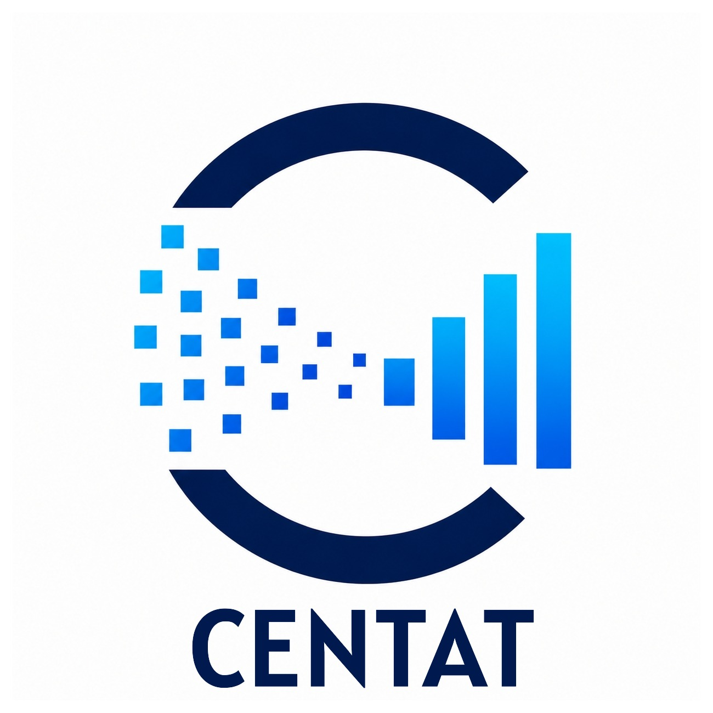
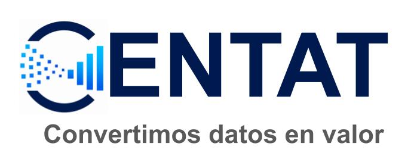

Doctor en Astrofísica con más de 17 años de trayectoria modelando datos complejos y multidimensionales. Especializado en transformar flujos de información técnica y estadística en soluciones estratégicas de alto impacto social e institucional.
Colaboro de forma independiente aportando rigor analítico, metodológico y técnico en entornos de alta exigencia estadística:
En esta etapa como Consultor en Ciencia de Datos e Inteligencia Artificial nace CENTAT, la marca que da identidad a mi actividad como profesional autónomo. Bajo este sello, englobo mi disponibilidad para prestar servicios directamente a entidades públicas y organizaciones privadas, ofreciendo asimismo soporte especializado a equipos científicos y tecnológicos.
Mi objetivo es aportar rigor metodológico y técnico para ayudar a transformar flujos de datos complejos en información útil y estratégica. A través del análisis avanzado, la modelización estadística y la automatización de procesos, facilito la toma de decisiones basada en evidencias y la generación de valor real para las instituciones y empresas. De ahí nace nuestro propósito y eslogan: Convertimos datos en valor.

¿Enfrentas un desafío con datos complejos, necesitas una auditoría técnica o buscas una colaboración institucional estratégica?
Contacta en LinkedInTrayectoria como investigador postdoctoral y doctoral en el Instituto de Astrofísica de Canarias (IAC) y la Pontificia Universidad Católica de Chile. Procesamiento del ciclo completo de datos masivos en proyectos internacionales de vanguardia (QUIJOTE, ACT, Simons Observatory):
Desarrollo actual de la base de datos y plataforma NAMASTE, un proyecto analítico enfocado en la eficiencia de la atención primaria y disponibilidad de citas en los sistemas de salud de las Islas Canarias.
Experiencia contrastada aplicando modelos de Machine Learning y Redes Neuronales híbridas para la predicción de series temporales complejas con presencia de ruido, aplicadas a la estimación de velocidad de viento y generación de energía eólica a 24 horas vistas.
Más de 960 horas de docencia impartida a niveles de grado y postgrado en Física, Matemáticas y Computación Científica en la Universidad de La Serena, además de la supervisión y examen de tesis de grado y máster tanto en Chile como en la Universidad de La Laguna (España).
Se muestran los cursos claves realziados:
La lista completa de cursos está disponible en el perfil de linkdIn: Certificaciones y Licencias.
¿Tienes un desafío complejo de datos, una auditoría técnica o una propuesta de colaboración institucional?
Conectar en LinkedIn